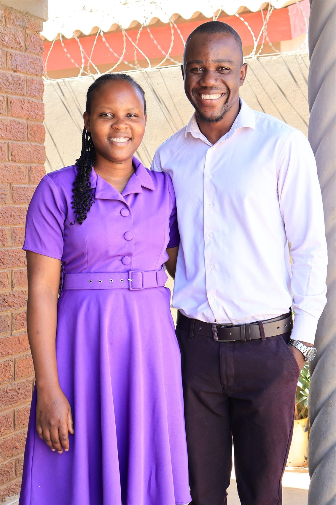
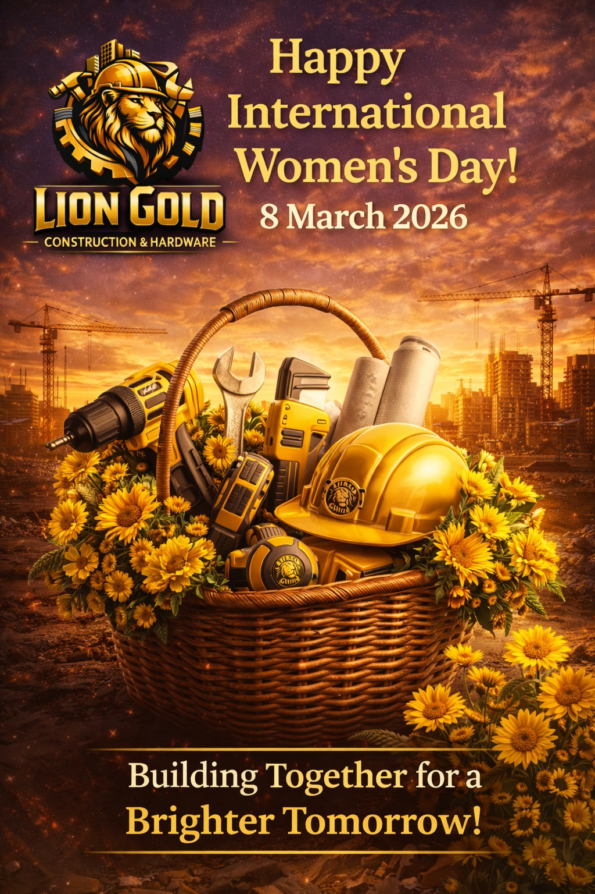

Real work.
Personal touch.
A selection of portrait photography and campaign design. Work is shown with the client’s permission; portrait subjects are family or personal work, not presented as commissioned client projects.
Portraits with a little room to breathe.
Family and personal portraits photographed by Samuel. Edited digital images are delivered, with prints available if requested.



Lingfield Advent Schools
Supported the school’s TikTok and Instagram account @las_culture, worked with its media team on photography, designed flyers and helped manage the PA system. Also filmed and edited event highlights and promotional videos.

Africa Day throwback
Event video produced for Lingfield Advent Schools.
AfriAd
Promotional video produced for Lingfield Advent Schools.
KS Tech Logistix
Digital flyer designs for the logistics brand. The supplied work promotes the company’s freight, warehousing and distribution services.

Lion Gold Construction & Hardware
Promotional artwork for the construction and hardware business, including an International Women’s Day campaign poster.

International Women’s Day / 8 March 2026Kind words from people
who know the work.
“I am impressed by the young, unique work and quick response time.”
“Schings—a brand that has never failed me.”
“I have been working with him for 4 years now and I have never been disappointed. A wide range of skills that anyone would enjoy using.”
“He has done some personal projects for me, especially my photos. Good job.”